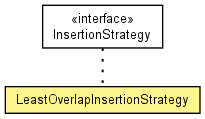

de.lmu.ifi.dbs.elki.index.tree.spatial.rstarvariants.util
Class LeastOverlapInsertionStrategy
java.lang.Object
 de.lmu.ifi.dbs.elki.index.tree.spatial.rstarvariants.util.LeastOverlapInsertionStrategy
de.lmu.ifi.dbs.elki.index.tree.spatial.rstarvariants.util.LeastOverlapInsertionStrategy
- All Implemented Interfaces:
- InsertionStrategy, InspectionUtilFrequentlyScanned, Parameterizable
public class LeastOverlapInsertionStrategy
- extends Object
- implements InsertionStrategy

Insertion strategy that exhaustively tests all childs for the least overlap
when inserting.
|
Method Summary |
|
findInsertChild(N node,
SpatialComparable mbr)
Returns the path information of the entry of the specified node which needs
least overlap enlargement if the given mbr would be inserted into. |
| Methods inherited from class java.lang.Object |
clone, equals, finalize, getClass, hashCode, notify, notifyAll, toString, wait, wait, wait |
LeastOverlapInsertionStrategy
public LeastOverlapInsertionStrategy()
- Constructor.
findInsertChild
public <N extends Node<E>,E extends SpatialEntry> TreeIndexPathComponent<E> findInsertChild(N node,
SpatialComparable mbr)
- Returns the path information of the entry of the specified node which needs
least overlap enlargement if the given mbr would be inserted into.
- Specified by:
findInsertChild in interface InsertionStrategy
- Type Parameters:
N - Node typeE - Entry type- Parameters:
node - the node of which the children should be testedmbr - the mbr to be inserted into the children
- Returns:
- the path information of the entry which needs least overlap
enlargement if the given mbr would be inserted into